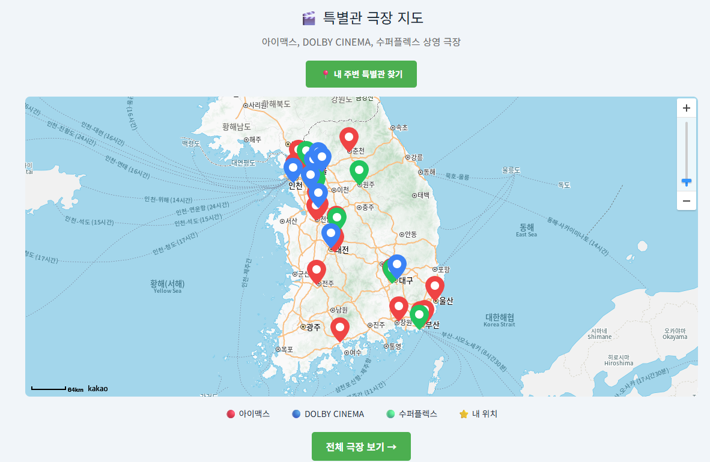
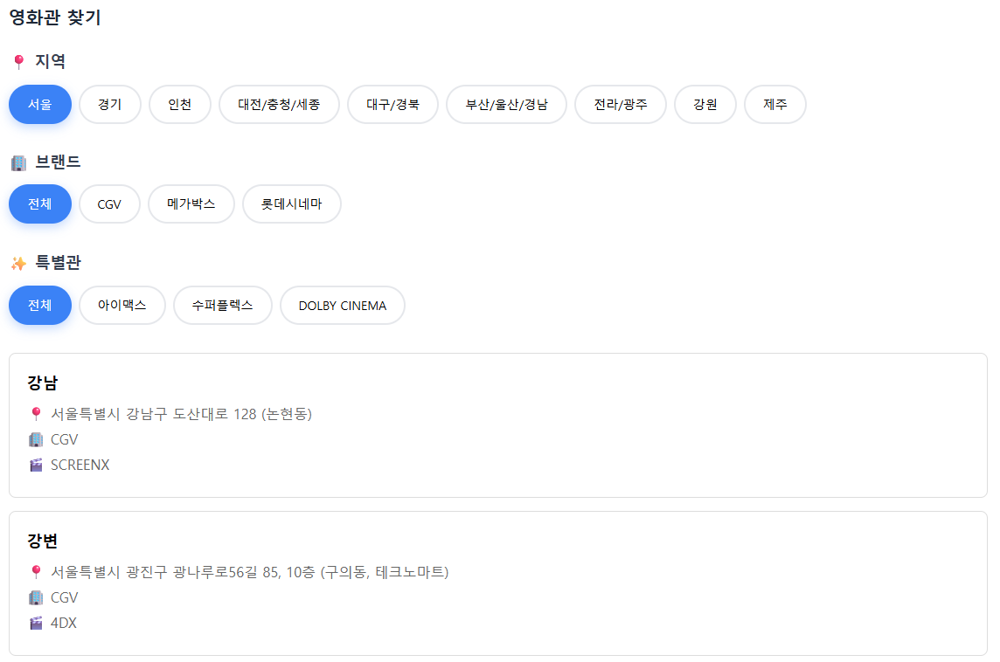

👋 소개
어제는 해결하지 못할 것 같던 문제도, 오늘은 구조가 보이고, 내일은 해결할 수 있다고 믿는 백엔드 개발자입니다.
프로젝트에서 3일간 DTO 구조를 리팩토링하며 이 철학을 실천했습니다. 하루 만에 끝내려 무리하지 않고, 매일 조금씩 개선하며 완성했습니다.
1개월간 영화 정보 통합 서비스를 개발하며 N+1 쿼리 87% 개선, API 응답속도 72% 단축을 달성했습니다. 로그 분석으로 근본 원인을 파악하고, 데이터 기반으로 최적화하며, 설계 개선을 통해 장기 유지보수성을 확보하는 방식으로 문제를 해결합니다.
우석대학교
컴퓨터공학과
2018.03 ~ 2023.02
명지대학교
컴퓨터공학과 (편입)
2023.03 ~ 2025.08(졸업)
• 백엔드 아키텍처
• DB 성능 최적화
• 확장 가능한 설계
🎬 프로젝트: 오늘의 영화
배포: Render + PostgreSQL | 핵심: 외부 API 통합, N+1 최적화, 캐싱 전략
KOBIS의 박스오피스 데이터와 KMDB의 포스터와 같은 영화 상세정보 외부 API를 통합과
극장 공공데이터와 카카오맵 api를 이용하여
실시간 박스오피스와 영화 상세 정보 및 극장의 위치를 제공하는 웹 서비스.
Adapter 패턴으로 외부 의존성을 격리하고, fetch join으로 N+1 문제를 해결했습니다.
🖼️ 주요 화면

실시간 박스오피스 & 영화 목록

영화 상세 정보

극장 지도

극장 상세 정보
🔧 핵심 문제 해결 경험
1. 외부 API 데이터 통합 및 매칭 전략
2. KMDB 데이터 703건 선수집
3. 2단계 매칭 전략: 정확 매칭 → 공백 제거 LIKE 검색
4. 로깅으로 "코렐라인", "가타카" 등 재개봉 영화 누락 발견 및 추가
2. N+1 쿼리 문제 해결
2. fetch join으로 MovieEntity → MoviePersonEntity → PersonEntity 한 번에 조회
3. DISTINCT로 중복 제거
4. 상황별 Repository 메서드 분리 (findById / findByIdWithPeople)
3. 캐싱 전략으로 API 호출 최적화
2. 날짜별 캐시 키 관리
3. 1일 TTL 설정
4. JsonNode → DTO 구조 리팩토링
2. Mapper 계층 도입
3. @JsonProperty로 필드명 매핑
4. 3일간 전체 구조 리팩토링
5. DB 구조 정규화 (영화-영화인 관계)
2. MoviePerson Entity (중간 테이블)
3. 다대다 관계 설계
🎯 주요 기술 선택
- AWS EC2 환경에서 안정적 운영
- H2 대비 안정적 운영 환경
- 복잡한 JOIN, LIKE 최적화 우수
- 향후 Full-text search 확장 가능
- MovieService: 조회 전용
- MovieSyncService: 수정/동기화
- 트랜잭션 최적화로 DB 부하 감소
- 단일 책임 원칙(SRP) 준수
- Service → Adapter → 외부 API
- API 변경 시 Adapter만 수정
- Mock Adapter로 테스트 용이
- 새 API 추가 시 영향 최소화
- 응답속도 72% 개선
- API 호출 80% 감소
- 날짜별 캐시 키, 1일 TTL
- 외부 API 호출 비용 절감
💡 이 프로젝트를 통해 배운 것
"코렐라인" 매칭 실패를 단순히 수정하지 않고, 로깅으로 패턴을 분석하고 알고리즘을 개선했습니다. 디버깅을 위해 더 효율적으로 생각해야 한다는 것을 배웠습니다.
3일간 리팩토링하며 "동작하는 코드"와 "유지보수 가능한 코드"의 차이를 고민했습니다. 초기 설계가 전체 효율을 좌우한다는 것을 깨달았습니다.
Hibernate SQL 로그로 N+1 문제를 확인하고 fetch join으로 개선했습니다. 측정 → 분석 → 개선의 체계적 접근법을 익혔습니다.
🏗️ 시스템 아키텍처

• Service: 비즈니스 로직
• Adapter: 외부 API 격리
• Repository: 데이터 접근
핵심 설계 • Entity-DTO 분리로 결합도 최소화
• CQRS: 조회/수정 서비스 분리
• 의존성 역전: 외부 API → Adapter
🗄️ 데이터베이스 설계 (ERD)

영화-영화인 다대다 관계 설계
다대다 관계로 영화인 정보 재사용
• 데이터 정규화
배우 중복 제거, 영화인 정보 일괄 관리
• 역할 정보 관리
roleGroup(감독/배우), roleName(배역명)
데이터 현황 • 영화: 703건
• 영화인: 5,532명
• 관계: 6,398건